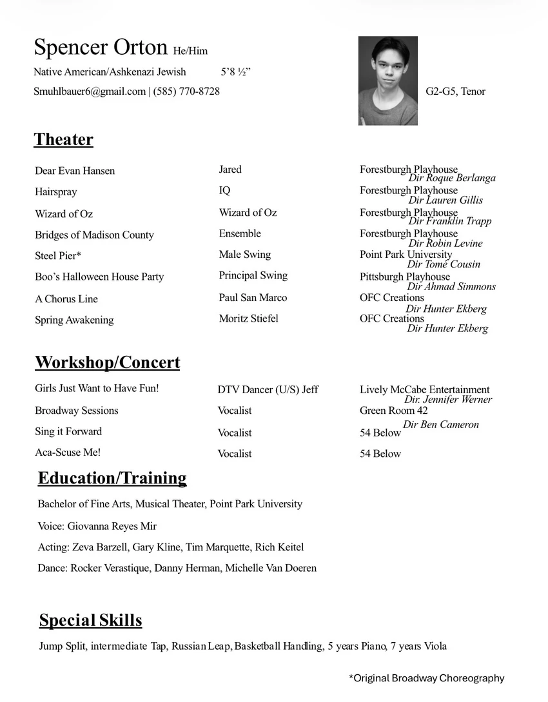

Headshot + Resume


Resume
He/himTenor, G2–G55′8½″Native American / Ashkenazi Jewish
Theater
| Production | Role | Company / Director |
|---|---|---|
| Dear Evan Hansen | Jared | Forestburgh PlayhouseDir. Roque Berlanga |
| Hairspray | IQ | Forestburgh PlayhouseDir. Lauren Gillis |
| The Wizard of Oz | Wizard of Oz | Forestburgh PlayhouseDir. Franklin Trapp |
| The Bridges of Madison County | Ensemble | Forestburgh PlayhouseDir. Robin Levine |
| Steel Pier* | Male Swing | Point Park UniversityDir. Tomé Cousin |
| Boo’s Halloween House Party | Principal Swing | Pittsburgh PlayhouseDir. Ahmad Simmons |
| A Chorus Line | Paul San Marco | OFC CreationsDir. Hunter Ekberg |
| Spring Awakening | Moritz Stiefel | OFC CreationsDir. Hunter Ekberg |
* Original Broadway choreography
Workshop & Concert
| Production | Role | Company / Director |
|---|---|---|
| Girls Just Want to Have Fun! | DTV Dancer (u/s Jeff) | Lively McCabe EntertainmentDir. Jennifer Werner |
| Broadway Sessions | Vocalist | Green Room 42Dir. Ben Cameron |
| Sing It Forward | Vocalist | 54 Below |
| Aca-Scuse Me! | Vocalist | 54 Below |
Education & Training
- Degree
- BFA, Musical Theater, Point Park University (expected May 2027)
- Voice
- Giovanna Reyes Mir
- Acting
- Zeva Barzell, Gary Kline, Tim Marquette, Rich Keitel
- Dance
- Rocker Verastique, Danny Herman, Michelle Van Doeren
Special Skills
- Jump split
- Russian leap
- Intermediate tap
- Basketball handling
- Piano (5 years)
- Viola (7 years)